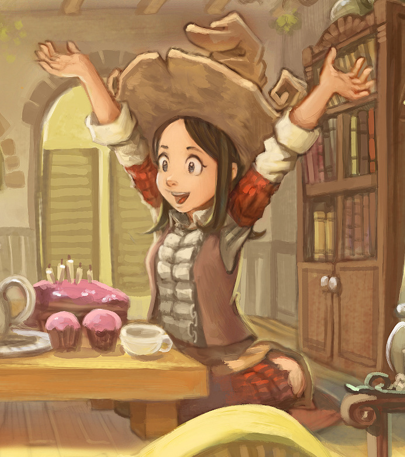

{kind=link}
Validate
Check manifest, dimensions, alpha coverage, reserve cells, and color key.
Pepper&Carrot fan project
Pepper animates real task states, installs with checksums, and repairs herself without deleting the previous copy.
Loading the installable atlas...
The validator reads the shipped WebP, checks every required cell, and rejects leaked color-key pixels or occupied reserve slots.
Nine task states plus a 16-direction look loop, with one extra v2 pointer-neutral cell.
Eight columns, eleven rows, fixed 192 x 208 cells.
Separate archives must match byte for byte.
Live atlas
This canvas reads the same spritesheet installed by Codex. Choose a state to inspect its real frame sequence.
Reduced-motion settings keep Pepper on the first idle frame.
The command-line tool validates a staged copy before the current pet moves. Every replacement and uninstall preserves a timestamped backup.
pepper-pet doctor --source pet --json
Check manifest, dimensions, alpha coverage, reserve cells, and color key.
Move the previous pet into a uniquely named recovery directory.
Promote the verified staging directory with a same-volume move.
Compare installed files with the trusted source and repair only when needed.

Pepper comes from David Revoy's libre webcomic. The official model sheet and source artwork allow adaptation and redistribution with attribution.
Install the pet, inspect the source, or fork the animation pipeline.